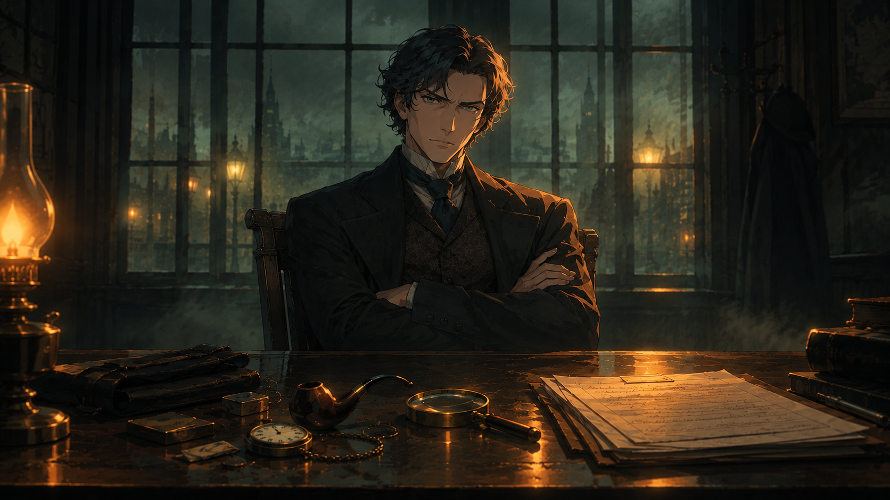
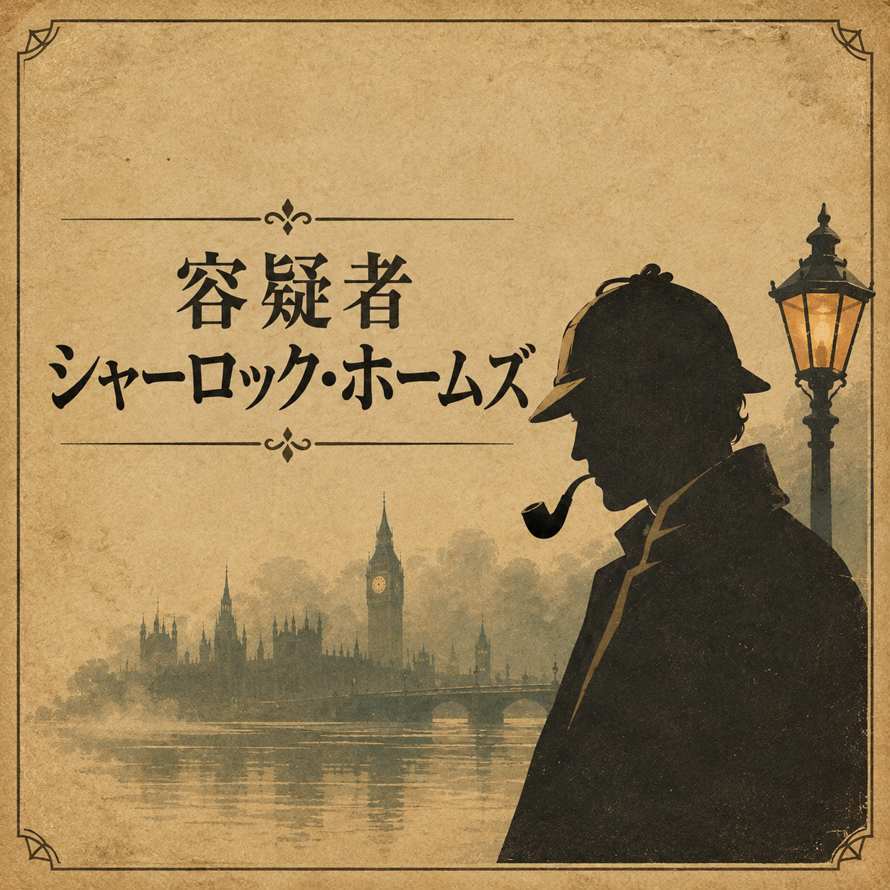

⛶

取調室
スコットランド・ヤード
矛盾
♪
ホームズの心証
質問
証拠
調書
事件ファイル
容疑者
シャーロック・ホームズ
事件
ベイカー街221Bの客死
発生
十一月の霧の夜から、翌朝まで
被害者
ジェラルド・ヴァンス（54）投資会社の共同経営者
被疑者
シャーロック・ホームズ（顧問探偵）
あなた
名もなき刑事
話題を選び、ホームズの証言を一文ずつ聞く。どこかに嘘が混じっている。
引っかかる一文で、証拠を突きつけて、嘘を崩す。
五つの嘘をすべて崩すと、何かが変わる。
外すと「心証」が減る。「手がかり」は何度使っても減らない。
取調べを始める

容疑者シャーロック・ホームズ
はじめる
嘘に証拠をぶつけ、真相を暴け。
つづきから
途中経過は、この端末のブラウザに自動で保存されます。
スキップ
次へ ▶